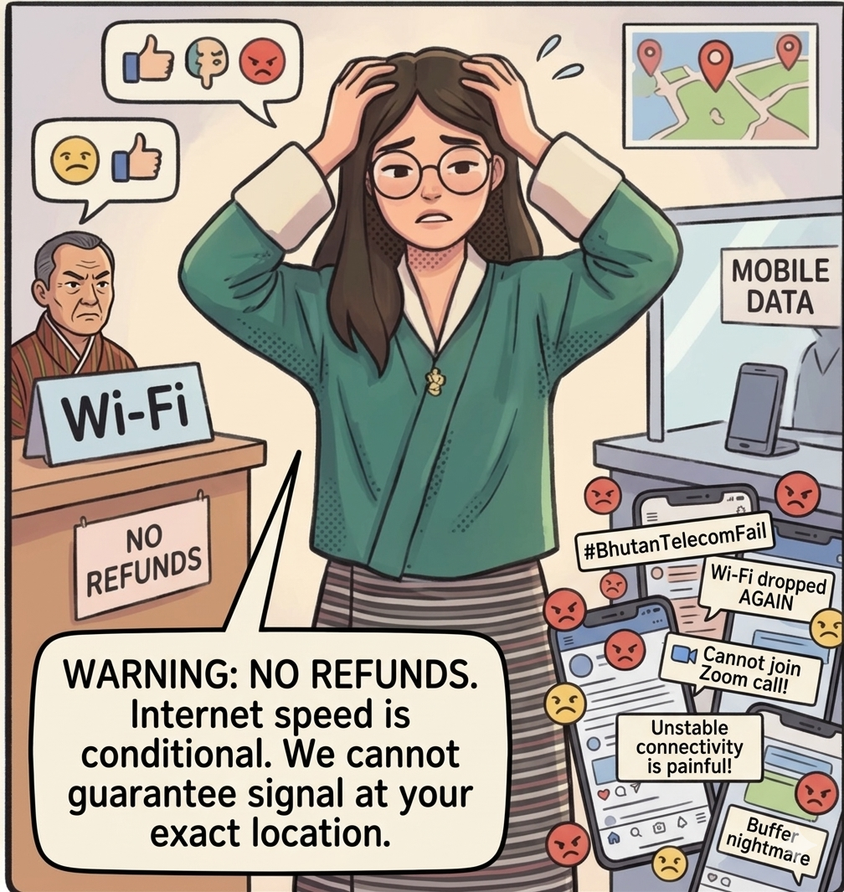
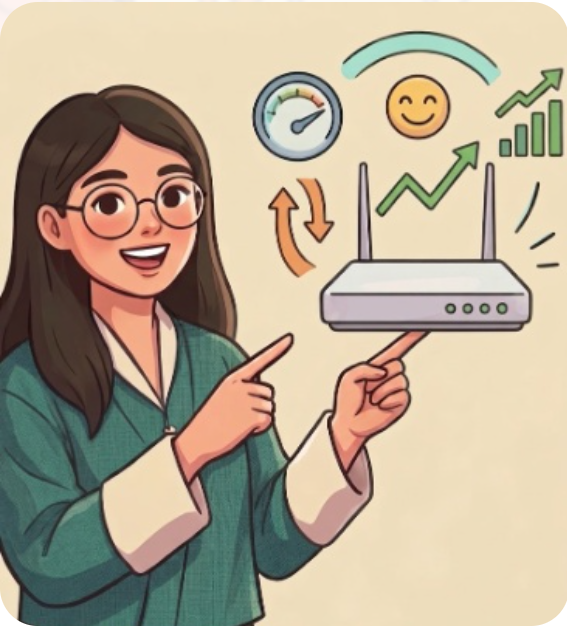
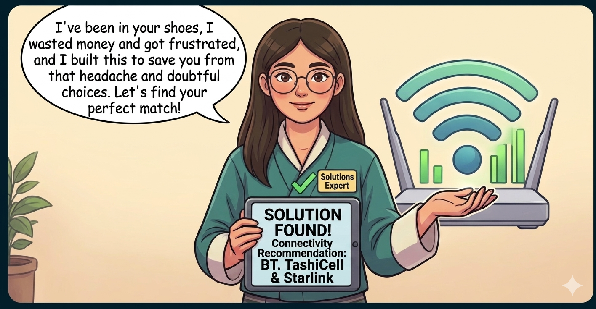
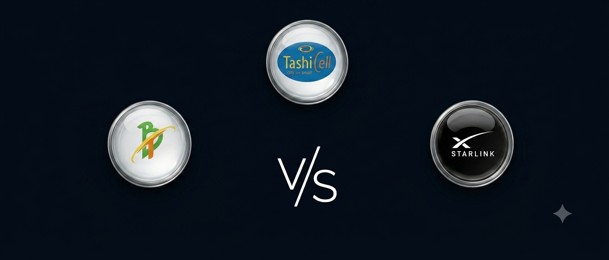

This platform acts as a compass, guiding you toward the most suitable, cost-effective network service based on your specific requirements.
Let's walk through how my personal connectivity struggles inspired the creation of TeleCompass!
The Situation Overview
When I started working remotely as an intern at Bhutan Data Scientists Pvt. Ltd., I depended heavily on mobile data for everything—online research, Zoom meetings, and daily tasks.
Mobile data costs were draining my budget while delivering an incredibly slow connection. All of my calls dropped constantly, and my daily tasks were repeatedly interrupted and delayed. And at the end of the month, I was spending over Nu. 2,500+ per month, and the packages barely lasted!
The Decision Paralysis
I desperately wanted to switch to Wi-Fi to save money, but uncertainty held me back. When I visited the service counters, the agents were direct and serious. They warned me with rigid warnings like: "We have a strict no-refund policy, and we cannot guarantee signal strength at your exact location."

Social media was overflowing with endless complaints about network stability and Wi-Fi package system. Caught in complete decision paralysis between an expensive data bill and a risky, unrefundable Wi-Fi connection, I found myself with only one option: I began rationing my internet just to survive.
✨ The Solution
Finally, my cousin lent me her router to test. The difference was clear as day!
With Wi-Fi, my Zoom calls became smooth, and I could browse freely without data anxiety. Best of all? It cost only Nu. 1,450 per month—a massive saving compared to mobile data.

This taught me that internet selection is conditional. Let's find out what works best for you!

No more decision paralysis or non-refundable risks. Take the guesswork out of your decision.
Not sure which telecom service to choose? We make it simple, so you can decide with confidence.
🇧🇹 Bhutan Connectivity Study
Kuzu Zangpo La
"This page is designed to guide you toward better connectivity choices that match your needs and lifestyle."
A guide for better connectivity — explore available internet service across Bhutan & helping you choose the right internet service for your need.
3Telecoms
20Dzongkhags
3Key Insights
100+Respondents

📍 Thimphu, Bhutan
👤
About Us
Meet the intern & project goals
📈
Data Insights
Tableau insights from survey data
🏢
Compare Networks
BT, TashiCell & Starlink
📬
Contact
We're here to listen to your feedback
👤 About Us
Project Background
🎓
Intern Researcher
Data Practitioner -
Turning Data into Insights
As part of my college program, I completed a six-month internship at Bhutan Data Scientists Pvt. Ltd.
This project explores telecommunications service usage in Bhutan, with a focus on customer preferences and satisfaction.
The website aims to provide personalized service recommendations based on user's needs.
The project focuses on reducing Bhutan's digital divide by
understanding connectivity gaps and promoting fair access,
to telecommunications services across all 20 dzongkhags.
20Dzongkhags
100+Respondents
2026Study Year
🏔️
Project Highlights
Understanding Mobile Data Package & Wi-Fi Usage Patterns
Examining the internet service usage pattern across urban and rural area of Bhutan, including what is their primary purpose and their needs based on occupation.
Analysing Customer Satisfaction
Measuring satisfaction levels with service quality, network reliability, and pricing, and how these factors influence daily usage of different services.
Responsive Dashboard for Insights
Building an interactive Tableau dashboard that enables users to explore data visually, filter by region, and identify trends at a glance, helping them better understand services based on their needs.
Recommendations for Better Connectivity
Having better connectivity recommendations is our priority, and we welcome user feedback that goes beyond the scope of this project, helping us improve and provide better, more tailored services.
🧭
Our Mission
To provide Bhutan's telecom ecosystem with a clear, data-driven compass helping every individual user navigate toward a more connected, reliable, and prosperous digital future in harmony with the values of Gross National Happiness.
📄
Research Report
Download the full internship research report on telecommunication service usage patterns in Bhutan, covering survey findings, data analysis, and connectivity recommendations across all 20 dzongkhags.
Telecommunication Service Usage in Bhutan · Internship Project 2026
📊 Data Analytics
Connectivity Insight Dashboard
Explore Bhutan's data package and Wi-Fi usage patterns across different regions and purposes, along with demographic trends and user satisfaction, through our interactive Tableau visualisation.
94%
Mobile Internet Penetration
3.8★
Avg. Customer Satisfaction
3
Active Telecom Providers
Data Package
Most used service
Students
Majority of the respondent
📡 Bhutan Connectivity — Interactive View
Powered by Tableau Public · Use filters to drill down by region, type of service, or purpose
ⓘ public.tableau.com - internship project
Key Findings
📱
Mobile Dominance
Bhutanese access the internet primarily via mobile devices, with 4G/LTE being the most used standard and introduction of 5G service in urban central.
🌄
Rural Gap
A significant issue regarding network connectivity and realibility shows a potential for Starlink's satellite service to help bridge in remote dzongkhags and curb the gap.
⭐
Satisfaction Trends
Average satisfaction scores hover around 3/5, with network reliability and affordable pricing cited as the top improvement priorities.
🚀
Growth Opportunity
Bhutan is strengthening digital infrastructure through the Digital Drukyul initiative, expanding fibre networks and improving rural connectivity.
🏢 Telecom Providers
Telecom Companies in Bhutan
Three key players bridging connectivity across the Kingdom of Bhutan.
📡
Find Your Best Connectivity
👉 Let us help you enjoy a better experience with available telecommunication services. 👈
Your Location
Primary Purpose
Occupation
Recommended Providers For You
Click any provider card or the provider to explore plans, coverage and services.
Bhutan Telecom Limited
State-Owned · Est. 2000
The B-Mobile network, now has a comprehensive reach, covering all 205 gewogs across the country, ensuring connectivity even in remote areas.
4G LTE / 5GFibre BroadbandFixed-Line
Tashi InfoComm Pvt Ltd
Private · Est. 2008
Offers mobile services across urban and growing semi-urban areas. Known for its competitive pricing and customer-focused plan
4G LTE / 5GMobile NetworkUrban Coverage
Starlink
Global · SpaceX LEO Satellite
A satellite-based internet service, increasingly available in Bhutan as an alternative for remote and high-altitude areas. Better connectivity ideal for Bhutan's mountainous terrain.
Explore key insights from international research and local data regarding network performance, consumer challenges, and infrastructure changes across different regions.
Insight #1
🏔️
Overcoming Terrain with Mobile Data
↻ hover or tap to read
Why it matters
Bhutan's rugged terrain has made it a mobile-first nation, with cellular connections exceeding 114% of the total population. Because fixed broadband lease lines are complex to deploy in mountainous regions, choosing the right mobile data package is the single most critical decision for a Bhutanese professional's daily workflow.
Source: ITU / BICMA connectivity data
Insight #2
📡
The Urban "Peak-Hour" Slump
↻ hover or tap to read
Why it matters
Data from BICMA shows that in high-density urban corridors like Thimphu, Phuentsholing, and Paro, users frequently face network congestion and speed dips during peak hours. Our recommendation engine filters options based on your purpose to ensure your critical tasks aren't choked when network traffic spikes.
Source: BICMA annual spectrum report
Insight #3
🏦
Telecom Reliability for digital transactions
↻ hover or tap to read
Why it matters
With the rapid shift toward GovTech initiatives and digital banking platforms like eLoan, goBoB, and mBoB, telecom connectivity is the backbone of Bhutan's retail economy. If an entrepreneur's network drops, their business stops. We isolate and recommend packages that prioritize stable uptime for digital transactions.
Source: Royal Monetary Authority of Bhutan
Insight #4
📍
Regional network coverage
↻ hover or tap to read
Why it matters
Market research reveals that the Western dzongkhags (Thimphu, Paro, and Chukha) generate over 57% of telecom service revenue, leading to dense 5G rollouts in these commercial nuclei while rural areas rely heavily on low-band spectrums. Our tool asks for your location to guarantee the provider recommended actually has strong network capabilities in your specific valley.
Source: BICMA / Bhutan Telecom market data
Insight #5
🛑
Spotting Global "Dark Patterns"
↻ hover or tap to read
Why it matters
In fierce international markets, operators often use "dark patterns"—manipulating digital checkouts with hidden administrative fees, pre-ticked add-ons, and complex cancellation loops. When choosing a plan, always read the final checkout breakdown carefully and manually uncheck hidden premium services to avoid unexpected spikes in your monthly bill.
Source: FTC / European Commission Consumer Rules
Insight #6
⛈️
Climate Resilience & Network Fragility
↻ hover or tap to read
Why it matters
Global research shows that climate-driven extreme weather is the leading cause of sudden, unexpected network downtime. When a localized grid drops, remote businesses freeze. For critical remote work, it is highly recommended to choose a provider that explicitly offers dual-band network backup or localized battery redundancies.
Source: EY Top 10 Risks in Telecommunications
📬 Share Your Feedback
Contact Us
Have questions about the project or insights? Share your feedback to help us improve and better understand connectivity needs.
Send a Message
Fill in the form and we'll respond within 2 business days.